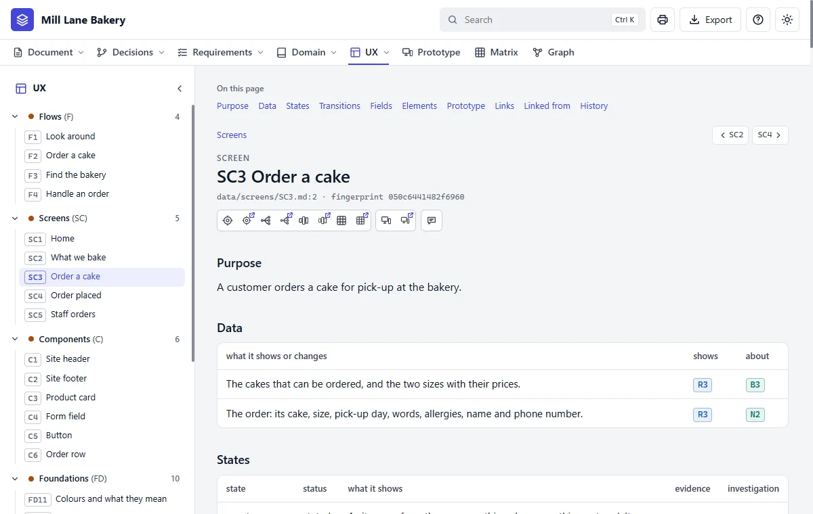
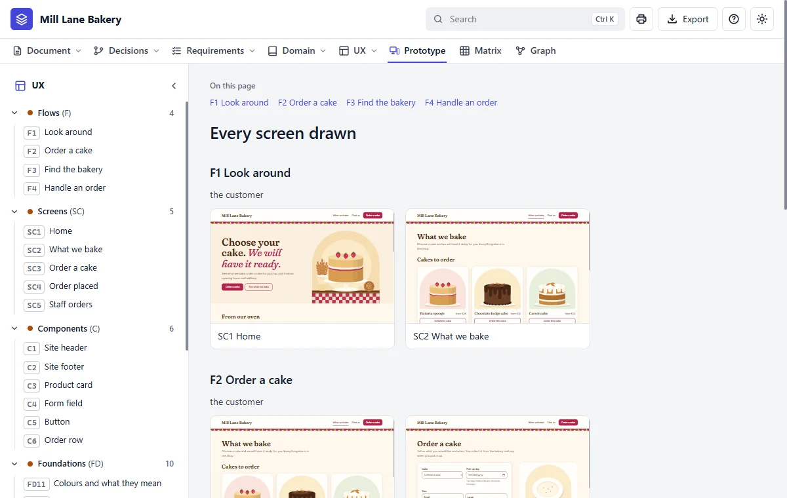

Step 13 of 20 · See what you got
Your screens
Do this
Open Screens in the tree, then SC3 Order a cake. A screen here is a list of facts, not just a picture.

| Section | Says |
|---|---|
| Purpose | Why someone is on this screen |
| States | What it shows when empty, failed or waiting |
| Elements | Each thing on the screen, and which requirement it shows |
Click Every screen drawn on the left to see the whole site at once:
